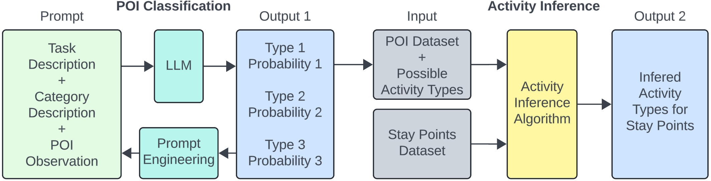
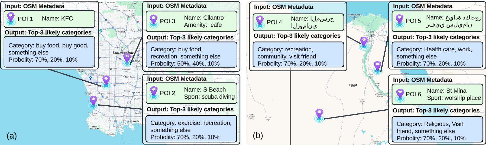

Knowledge-based AI Application in Transportation
Project Overview
This pipeline adds semantic information to GPS trajectories by combining language-model-based point-of-interest classification with probabilistic activity inference. It links locations to visit purposes and supports analysis across regional datasets.

Key Contributions
- Combines point-of-interest classification with probabilistic inference of travel activities.
- Applies the framework across regional point-of-interest datasets without additional training.
Results
- 93.4% accuracy and 96.1% F-1 score in POI classification
- 91.7% accuracy with 92.3% F-1 score in activity inference
